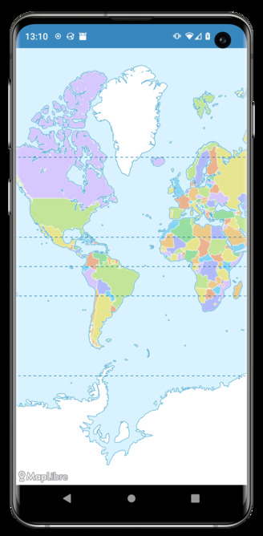
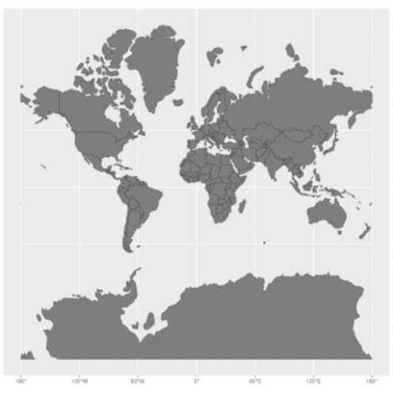
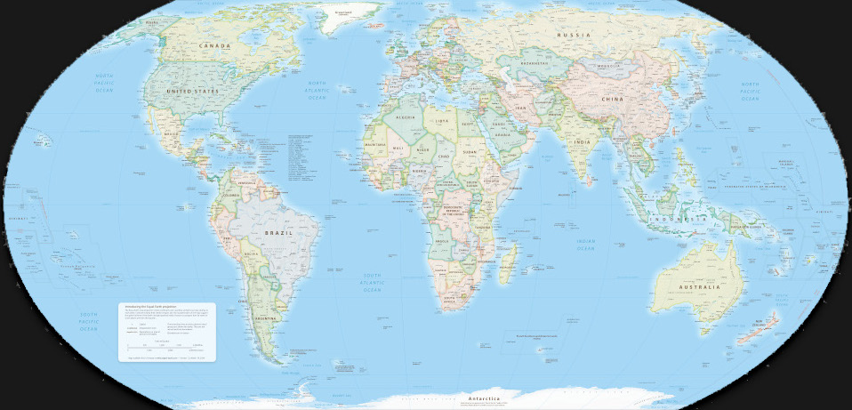
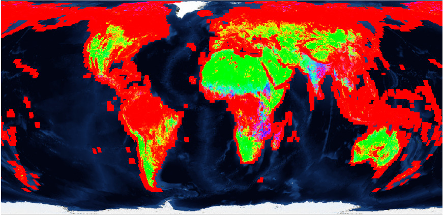

Equal Earth Maps Using Cloud-Optimized Formats
Pirmin Kalberer pka@sourcepole.ch
CNG Zürich 2026
The current state of Web Mapping
- Web Mercator projection
- Sometimes a globe

Web Mercator - the bad parts

Africa actually has 14 times as much area as Greenland
Equal Earth map projection

Bojan Šavrič, Tom Patterson, Bernhard Jenny, 2018
https://www.equal-earth.com/
GeoZarr

Demo
Behaviour for interactive maps
Proposals:
- Dynamic center meridian
- Transition to Mercator for higher zoom levels
Takeaways
- Equal Earth is here - use it!
- Basic support for cloud-native formats
- Web mapping libraries need support for antimeridians != 180°